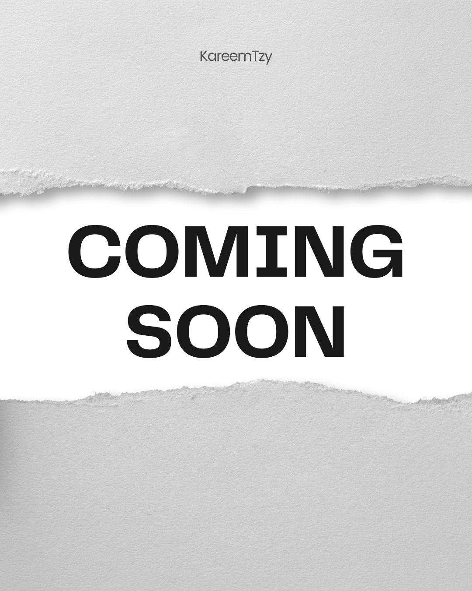
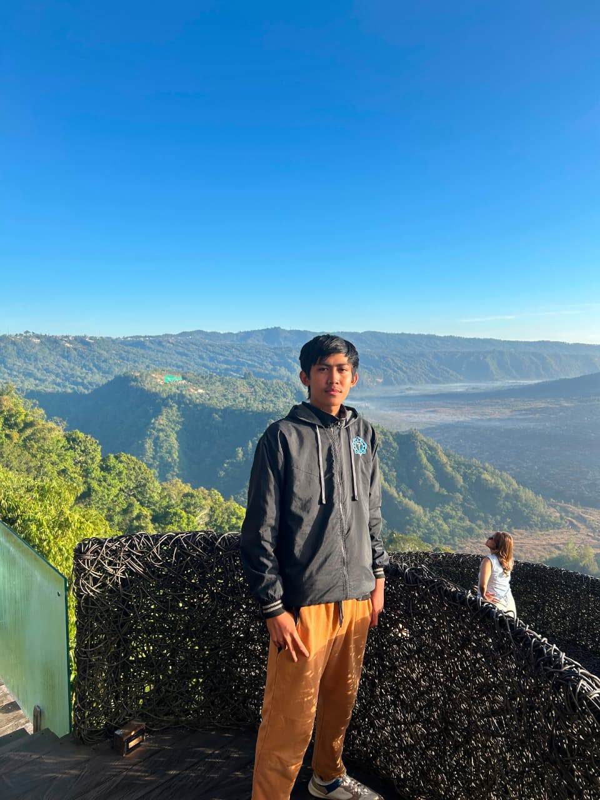

KAREEM
KIN
InformationTechnology
JIKOSOUKAI
A New Talent With High Courious Things,
Let's See in The Future.
Hello, I'm Kareem
Pontianak , 07-03-2005
Project KareemTzy
Raya
Scroll
Current News !!
Kareem adalah seorang programmer yang sedang berkembang di dunia teknologi informasi.
The Question Is:
AI its Friend, Not an Enemy
~KareemTzy~

Hello, I'm Kareem!
I'm programmer making mark in the information technology sector. Born in Articial Intellegnt era, doesn't make me Scare.
- Name
- Kin Kareem Raya Benami Wijaya
- Birthplace
- Pontianak, 7 Januari 2005
- Group
- Software Engineer
- Nickname
- KareemTzy
Introduction · 自己紹介Let's Be Friends
02 Activity
In Front Laptop
Make AI Friendly For All Users..
-
(01)
Dream
Become an Real Engineer In AI Era.
→ -
(02)
Hobby
Exercise dan Explore Something New.
→ -
(03)
Hope
I Can Make My Self Proud.
→
Failure It's The Best Teacher.
04 Gallery
My Project
Scroll To See →